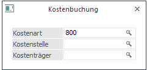

Das Fenster "Kostenbuchung" dient zur Schnellerfassung von Kostenrechnungsinformationen. Voraussetzung dafür, dass dieses Fenster geöffnet wird, ist, dass in der verwendeten Buchungsart die Option "schnelle Kostenerfassung in Buchen (Dialog - Stapel)" aktiviert wurde.

Eingabefelder
Ø Kostenart
Die Kostenart wird vom verwendeten Sachkonto vorbesetzt.
Ø Kostenstelle
Eingabe der gewünschten Kostenstelle. Durch Drücken der F9-Taste kann nach allen angelegten Kostenstellen gesucht werden.
Ø Kostenträger
Eingabe des gewünschten Kostenträgers. Durch Drücken der F9-Taste kann nach allen angelegten Kostenträgern gesucht werden. Diese Eingabe kann optional erfolgen, ist aber nicht unbedingt erforderlich.
Durch Drücken der F5-Taste (OK-Button) wird das Fenster geschlossen und die eingegebenen Informationen in die KORE-Erfassungstabelle rückgeschrieben. Eine separate Aufteilung in der KORE-Erfassungstabelle ist nicht notwendig. Eine Aufteilung von Kosten auf mehrere Kostenstellen bzw. Kostenarten ist in diesem Fenster nicht vorgesehen.